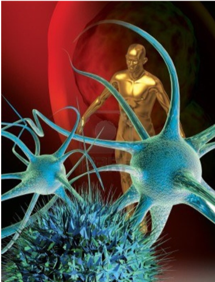

 Se entiende por célula, tejidos (conjunto de células semejantes que cumplen una función determinada). A pesar de la complejidad del organismo, este se encuentra constituido tan solo por cuatro tipos básicos de tejidos: el epitelial, el conectivo, el muscular y el nervioso. Estos tejidos no se encuentran aisladamente, sino que se unen unos con otros en proporciones variables para formar los distintos órganos y sistemas. En el presente capítulo se hace un estudio del tejido epitelial. Dicho tejido lo podemos encontrar en la piel, cumpliendo la función de protección; en el intestino delgado, absorbiendo nutrientes; en el sistema respiratorio, purificando el aire, en las glándulas, elaborando sustancia como el jugo digestivo y hormonas. Realmente son muchas las funciones que cumple el tejido epitelial. Luego veremos el tejido conectivo, que es el tejido más abundante y más ampliamente distribuido en el organismo. Se caracteriza morfológicamente por presentar diferentes tipos de células separadas por abundante material intercelular, sintetizando por ellas. La riqueza en material intercelular es una de las características más importantes. El tejido conectivo propiamente dicho mantiene unido, sostiene y refuerza a los demás tejidos del organismo. Continua el presente capitulo con el tejido muscular, que es el responsable del movimiento corporal, la eficiencia del músculo como máquina es el 25%, es decir ligeramente menor al de los motores diesel. Sus células son conocidas como fibras musculares, puede ser de diferente tipo: tejido muscular estriado esquelético (se encuentra insertado en el hueso), tejido muscular estriado cardiaco (en el corazón) y tejido muscular liso (en las vísceras) Por último veremos con mayor detenimiento el tejido nervioso, como sabemos nuestro organismo está regulado por el sistema nervioso que capta el estímulo externo (como el frío y el calor) o el estímulo interno (como el dolor), lo procesa y emite una respuesta. El sistema nervioso está constituido por un tejido altamente especializado el tejido nervioso: dicho tejido está formado por las neuronas: células que se encargan de captar, conducir y transmitir el impulso nervioso. Estas células no se reproducen, por lo tanto cualquier daño que sufra puede ser irreversible. El tejido nervioso también está constituida por la neurona veremos su clasificación y por las neuroglias: están también son de mucha importancia, porque protegen, reparan, y sostienen a las neuronas.
Neurociencias I